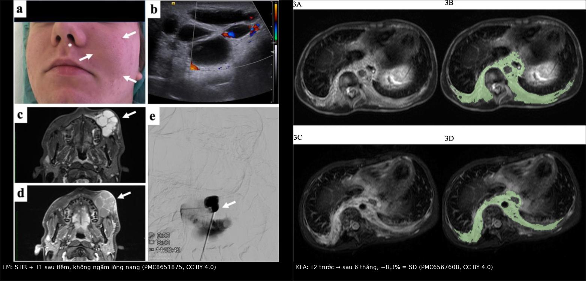
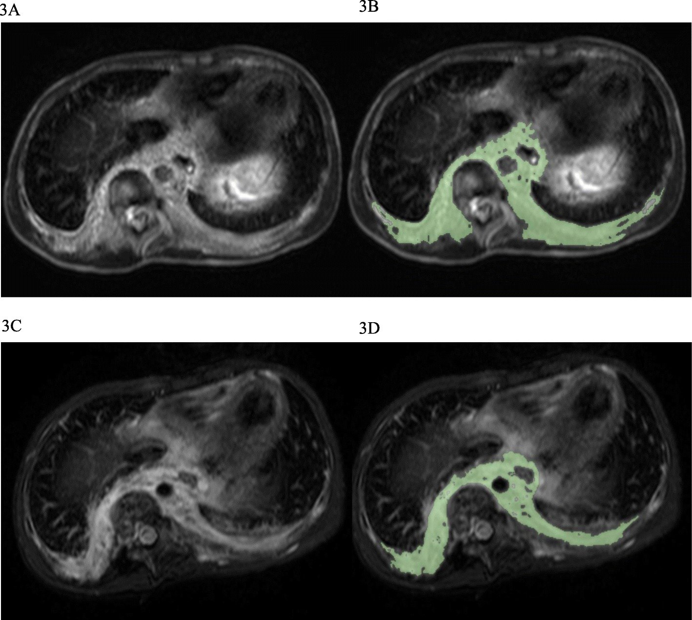
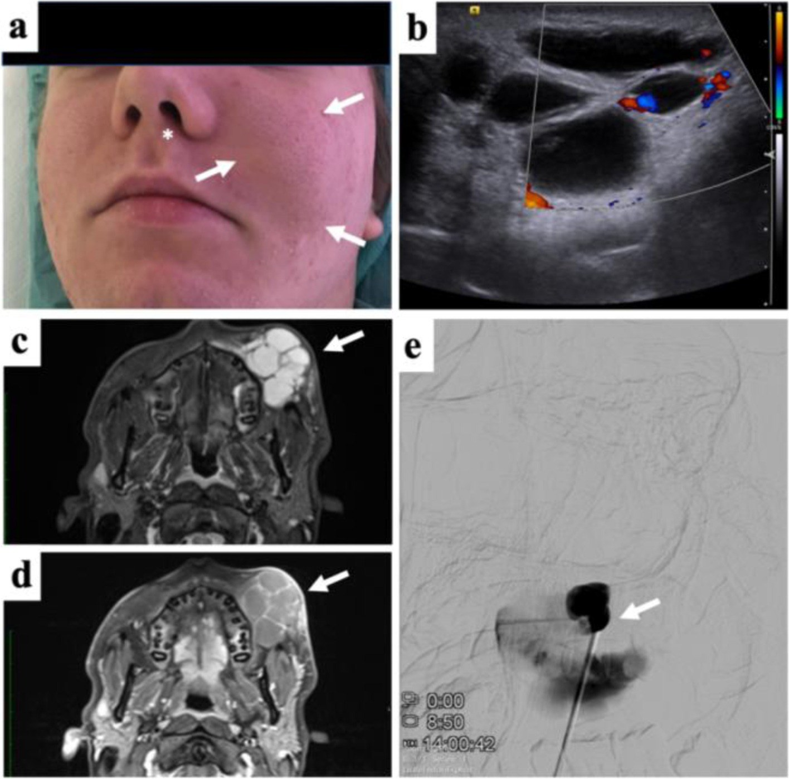

1808 — Sirolimus trong dị dạng bạch huyết phức tạp: theo dõi nồng độ đáy, độc tính và khi nào ngừng / Sirolimus monitoring and discontinuation in complex lymphatic anomalies (GLA, GSD, KLA)
Tags: pattern:loansan-bach-huyet pattern:dap-ung-dieu-tri pattern:doc-tinh-thuoc pattern:tran-duong-trap vung:da-he vung:trung-that vung:phoi vung:xuong score:CTCAE score:dap-ung-the-tich protocol:MRI-T2-fatsat protocol:the-tich-3D incidentaloma:khong
Mức chắc chắn (certainty): tổng hợp y văn (literature synthesis) — số liệu lấy từ thử nghiệm pha III VASE (132 bệnh nhân, PMC10721262, CC BY 4.0), thử nghiệm pha II (19 bệnh nhân, PMC6206885, CC BY 4.0), đoàn hệ 20 bệnh nhân GLA/GSD/KLA/CCLA (PMC6567608, CC BY 4.0), đoàn hệ 20 trẻ (PMC10687411, CC BY 4.0), tổng quan có hệ thống 105 trẻ (PMC9249683, CC BY 4.0), khuyến cáo thực hành "how we approach" (PMC13019703, CC BY 4.0), tổng quan hình ảnh dị dạng mạch (PMC8651875, CC BY 4.0) và ca KLA đáp ứng trametinib (PMC7539180, CC BY 4.0).
Bài này là phần "sau khi bắt đầu thuốc" của 077. 077 dạy nhận diện GLA/GSD/KLA, tiêu xương "bệnh xương biến mất", tràn dưỡng trấp và đưa sirolimus vào như một lựa chọn. Bài này trả lời ba câu hỏi mà 077 dừng lại: (1) theo dõi bằng nồng độ đáy nào, ở ai, bao lâu một lần; (2) phân biệt đáp ứng thật – ổn định bệnh – độc tính trên MRI và xét nghiệm; (3) khi nào giảm liều, khi nào ngừng, và ngừng rồi thì điều gì xảy ra.
1. Tổng quan bệnh học – cơ chế hình ảnh
- Sirolimus (rapamycin) ức chế cái gì: thuốc gắn FKBP12 rồi ức chế mTORC1, làm giảm phosphoryl hóa S6K1 và 4EBP1 → giảm tổng hợp protein, giảm tăng sinh tế bào nội mô bạch huyết, giảm lymphangiogenesis và giảm biểu hiện VEGF-C/VEGFR-3. Trong mô hình lymphangiectasia, sirolimus làm thoái triển một phần tổn thương kèm giảm Prox1 và VEGFR-3, nhưng không gây apoptosis tế bào nội mô bạch huyết — đây là lý do hình ảnh cải thiện chậm và không bao giờ "sạch" (PMC6567608).
- Vì sao thuốc này hợp lý về mặt phân tử: PIK3CA đột biến hoạt hóa có ở tới 75% dị dạng bạch huyết (LM) và ở CLOVES/KTS/CLVM; TIE2 ở tới 60% dị dạng tĩnh mạch (PMC10721262). KLA lại thiên về đường RAS/MAPK: NRAS p.Q61R ở 10/11 ca trong một loạt giải trình tự, và ca CBL cắt cụt protein dưới đây — chính là cơ sở để đổi sang ức chế MEK khi mTOR thất bại (PMC7539180).
- TẠI SAO tổn thương sáng trên T2 và không ngấm thuốc: dịch bạch huyết giàu protein nhưng không phải mô đặc, nên T1W giảm hoặc trung gian, T2W/T2 fat-sat/STIR tăng rất mạnh, có thể có mức dịch–dịch (fluid–fluid level), và chỉ vách/bao ngấm thuốc, lòng nang không ngấm (PMC8651875). Trên DWI, nước tự do trong nang không hạn chế khuếch tán (ADC cao) — khác áp-xe (ADC thấp) và khác u đặc.
- TẠI SAO thể tích giảm nhưng không về 0: sirolimus làm giảm hoạt tính tế bào nội mô và lượng dịch thoát, còn thành nang xơ đã giãn thì tồn tại. Vì vậy "còn nang trên MRI" không đồng nghĩa thuốc thất bại: trong thử nghiệm pha II, 16/16 bệnh nhân đạt đáp ứng một phần (PR) trên lâm sàng, nhưng chỉ 7/16 (43,7%) giảm kích thước trên T2W, và 3/16 (18,7%) còn tiến triển về hình ảnh dù lâm sàng tốt hơn (PMC6206885).
- TẠI SAO thuốc vừa chữa vừa gây độc: mTORC1 có mặt ở tế bào T, biểu mô miệng–ruột, tủy xương, nguyên bào sợi và tế bào ống thận. Ức chế mTOR vì thế kéo theo suy giảm miễn dịch, viêm miệng, giảm dòng tủy, tăng lipid, chậm liền vết thương. Trong VASE, 96% (127/132) có ít nhất một độc tính, dù 88% chỉ ở độ 1–2; 18% (24 ca) có độc tính độ 3–4 và tất cả đều hồi phục sau khi ngắt hoặc ngừng thuốc (PMC10721262).
- TẠI SAO nồng độ đáy dao động mạnh ở trẻ nhỏ: sirolimus chuyển hóa qua CYP3A4/P-glycoprotein. Enzyme CYP3A4 chưa trưởng thành ở sơ sinh → cùng mg/m² cho nồng độ cao hơn; sốt và nhiễm trùng làm chậm chuyển hóa → nồng độ vọt lên; thuốc ức chế CYP3A4 (macrolid, azol kháng nấm) đẩy nồng độ lên, thuốc cảm ứng (rifampicin, phenytoin, St John's wort) kéo xuống. Vì thế VASE loại trừ bệnh nhân đang dùng chất cảm ứng/ức chế CYP3A4 (PMC10721262), và khuyến cáo thực hành đề nghị đo nồng độ mỗi 3 ngày ở trẻ nhỏ cho tới khi ổn định (PMC13019703).
- Định lượng phải nhớ:
- Dịch tễ: LM gặp ở 1/2.000 trẻ sinh sống (PMC9249683).
- Hiệu quả: VASE 85% (112/132) cải thiện lâm sàng; 74% trong số bệnh nhân có đau cải thiện ngay tháng đầu; 77% trong 101 ca đau hằng ngày giảm đau; 73% trong 106 ca hạn chế chức năng cải thiện (PMC10721262). Pha II: PR 16/16, QoL cải thiện 16/16 (PMC6206885). Đoàn hệ GLA/GSD/KLA: PR 10/20 (50%) lúc 6 tháng, 35% lúc 3 tháng, không ca nào tăng ≥ 20% (PMC6567608). Tổng quan 105 trẻ LM vùng đầu cổ: 91,4% (96/105) đáp ứng, trong đó 95 PR + 1 CR (PMC9249683).
- Liều: 0,8 mg/m² × 2 lần/ngày (dung dịch uống, trẻ < 12 tuổi); 2 mg/ngày dạng viên cho người lớn/trẻ lớn (PMC10721262, PMC6206885). Sơ sinh 0–1 tháng: 0,4–0,45 mg/m²/lần × 2 lần/ngày (PMC13019703).
- Nồng độ đáy: mục tiêu 10–15 ng/mL trong pha II/VASE và 5–15 ng/mL ở 19/25 (76%) nghiên cứu (PMC6567608); thực tế VASE ghi nhận 1,8–23,4 ng/mL ở nhóm cải thiện và 4,3–15,2 ng/mL ở nhóm nặng lên tạm thời (PMC10721262) — con số không dự báo đáp ứng.
- Độc tính: viêm miệng 66% (độ 1–2) + 8% (độ 3–4); mệt 70%/4%; tiêu chảy 40%/2%; đau đầu 25%/5%; phát ban 31%/1%; trào ngược 21%; ngắt thuốc vì độc tính 8% (10 ca); thời gian ngắt trung vị 7 ngày (2–108) (PMC10721262).
- Sau khi ngừng: trong 61 ca hoàn thành 2 năm, 33 (54%) tái phát triệu chứng, 19 ca tái phát trong 6 tháng đầu; 22 (36%) phải dùng lại, trung vị 6 tháng (1–18) sau ngừng và tất cả đều đáp ứng lại (PMC10721262). Đột biến PIK3CA tái phát sớm (3 tháng, 8/9 ca), TIE2 muộn hơn (9 tháng, 5/6 ca).
2. Mẫu hình + chẩn đoán phân biệt theo vị trí (gamut)
- Bốn câu hỏi bắt buộc mỗi lần đọc phim theo dõi:
- Tổn thương đích (target lesion) có đo được không? — chọn một khối/nang lớn nhất, đo được trên T2 fat-sat/STIR, ghi thể tích cm³, không đổi tổn thương giữa các lần.
- Thể tích đổi bao nhiêu %? — PR: giảm ≥ 20%; PD: tăng ≥ 20%; còn lại là SD (PMC6567608, PMC10687411).
- Có biến chứng mới không? — tràn dưỡng trấp, tràn màng tim, chèn ép đường thở, chảy máu trong nang, nhiễm trùng nang.
- Bất thường này là bệnh hay là thuốc? — hạch, thâm nhiễm, tràn dịch có thể do tiến triển hoặc do độc tính/bội nhiễm (mục 3).
- Mẫu hình 1 — LM đa nang (macrocystic/mixed), đáp ứng tốt: nhiều nang T2 sáng, vách mảnh ngấm thuốc, lòng nang không ngấm; sau 6–12 tháng thể tích giảm ≥ 20%, vách mỏng đi, đôi khi dịch đặc hơn (T1 sáng lên do protein/máu cũ) nhưng tổng thể tích giảm. Đây là nhóm dễ đo nhất và cũng là nhóm tiên lượng đáp ứng tốt nhất.
- Mẫu hình 2 — LM vi nang/lan tỏa, "SD nhưng tốt lên": tổn thương thấm mỡ/diện rộng, không vẽ được ROI tin cậy; trên MRI gần như không đổi nhưng bệnh nhân giảm đau, giảm chảy dịch, tăng cân. Trong đoàn hệ trẻ Hàn Quốc, 83,3% ca có tổn thương đo được nằm trong nhóm CR/PR, so với 12,5% ở nhóm SD (p = 0,005) — tức khả năng đo được tự nó dự báo "đáp ứng" theo tiêu chí hình ảnh (PMC10687411).
- Mẫu hình 3 — GLA/GSD/KLA lan tỏa, "bệnh hệ thống": tổn thương trung thất – phổi – xương – lách cùng lúc; trên MRI ngực là dày vách tiểu thùy + dịch màng phổi, trên xương là nhiều ổ ly giải hoặc tiêu vỏ tiến triển. Nhóm này cần liều/đích cao hơn vì nguy cơ tử vong: KLA sống sót toàn bộ 34% dù điều trị đa mô thức (PMC7539180).
- Mẫu hình 4 — CCLA (dị dạng ống dẫn lưu trung tâm): bất thường ống ngực và mạng bạch huyết trung tâm, chẩn đoán bằng DCMRL (chụp cộng hưởng từ bạch huyết động học); sirolimus ít hiệu quả hơn, và đây là nhóm chuyển sang ức chế MEK nếu đột biến KRAS (PMC10243805, PMC7539180).
- Gamut theo vị trí tổn thương đích: cổ–mặt (đo trên STIR trục/vành, nguy cơ chèn đường thở) → trung thất (T2 trục, kèm màng phổi–màng tim) → sau phúc mạc/lách (T2 trục, dễ nhầm nang tụy/thận) → xương (T1/T2 + CT, đánh giá tiêu vỏ) → mô mềm chi (STIR, đo chu vi chi).
- Gợi nhớ 4 chữ — TARGET–VOLUME–COMPLICATION–CAUSE: Target (một tổn thương đích) · Volume (% theo ngưỡng 20%) · Complication (dưỡng trấp/chèn ép/chảy máu) · Cause (bệnh hay thuốc). Trả lời đủ 4 chữ là ra được quyết định giữ – giảm – ngừng thuốc.
3. Bảng so sánh phân biệt (ma trận đối chiếu)
| Thực thể (entity) | Hình ảnh điển hình | Chốt vào (rule-in) | Chốt loại (rule-out) | Gợi ý xác nhận |
|---|---|---|---|---|
| Đáp ứng một phần (PR) | Tổn thương đích trên T2 fat-sat nhỏ lại, vách mỏng, không có ổ dịch mới | Thể tích giảm ≥ 20% so với baseline cùng chuỗi xung + triệu chứng giảm | Thể tích giảm < 20% nhưng bệnh nhân tốt rõ → gọi SD có lợi ích lâm sàng, không phải PR | Đo thể tích 3D (ROI bán tự động) trên T2 FS/STIR; ghi cm³ + % |
| SD có lợi ích lâm sàng | Hình ảnh gần như không đổi; đôi khi nang đặc lên trên T1 do protein | Thể tích thay đổi < 20% + giảm đau/giảm chảy dịch/tăng QoL | Nếu không cải thiện lâm sàng và không giảm thể tích → không có lợi ích | Thang đau VAS, số ngày chảy dịch, PedsQL; so ảnh cùng thì |
| Bệnh tiến triển (PD) | Tổn thương đích to lên, nang mới, dịch màng phổi/màng tim mới, thâm nhiễm mô mềm | Thể tích tăng ≥ 20% hoặc biến chứng mới (tràn dưỡng trấp, chèn ép) | Chỉ một ổ nang căng do chảy máu trong nang (T1 sáng, không tăng thể tích tổng) → biến chứng, không phải PD | So sánh cùng mặt phẳng; DCMRL nếu nghi rò mới; cấy dịch nếu sốt |
| Tái phát sau ngừng thuốc (rebound) | Tổn thương quay về kích thước cũ sau khi ngừng; tràn dịch tái xuất hiện sau 3–9 tháng | Triệu chứng + hình ảnh tái phát sau khi ngừng, đáp ứng lại khi dùng lại cùng liều cũ | Nhiễm trùng mới gây tràn dịch (sốt, dịch đục, cấy dương) → không phải rebound | Mốc thời gian ngừng thuốc; PIK3CA tái phát ~3 tháng, TIE2 ~9 tháng |
| Giảm dòng tủy do thuốc | Không có hình ảnh đặc hiệu; không có tổn thương tủy mới trên MRI | Giảm bạch cầu/tiểu cầu/Hb sau khi tăng liều hoặc tăng nồng độ đáy, hồi phục khi ngắt thuốc | Tiểu cầu giảm kèm khối trung thất, D-dimer cao, chảy máu → do KLA, không phải thuốc | CTM + nồng độ đáy trước/sau chỉnh liều; 27% trẻ LM có độc tính tủy độ 3 trong một đoàn hệ 60 trẻ |
| Viêm miệng do sirolimus | Không cần chẩn đoán hình ảnh; loét niêm mạc miệng lan tỏa, không có mảng trắng bong | Loét đối xứng, xuất hiện sau tăng liều, giảm khi hạ liều/ngắt | Loét một bên + mảng trắng + sốt → HSV/Candida, cần nhuộm/cấy | Soi miệng; thử hạ liều 1 bậc; 8% độ 3–4 trong VASE |
| Viêm phổi do sirolimus | Thâm nhiễm mô kẽ/kính mờ đối xứng hai bên, không theo thùy, có thể kèm tràn dịch nhỏ | Kính mờ/vách tiểu thùy mới sau khởi thuốc, không sốt, cải thiện khi ngừng thuốc | Đông đặc khu trú + sốt + tăng CRP → nhiễm trùng; PJP: kính mờ rộng + LDH cao + CD4 thấp | HRCT; công thức máu; BAL/PCR PJP khi nghi; thử ngừng thuốc có kiểm soát |
| Tràn dưỡng trấp tái phát | Dịch màng phổi lượng lớn, T2 rất sáng, có thể mức dịch–dịch; không đặc | Triglyceride dịch > 110 mg/dL hoặc có chylomicron, tái phát sau ngừng thuốc | Dịch đục/mủ, pH thấp, glucose thấp, cấy dương → tràn mủ, không phải dưỡng trấp | Chọc dò + triglyceride/creatinine; DCMRL tìm ổ rò; đừng chỉ tăng liều |
| Đáp ứng với ức chế MEK (trametinib) | Giảm nhanh dịch màng phổi + dày vách tiểu thùy trong 3 tháng; DCMRL giảm tưới bạch huyết phổi | Thất bại/không dung nạp sirolimus + đột biến KRAS/NRAS/CBL, hình ảnh cải thiện trong 3 tháng | Đột biến PIK3CA đơn thuần → cân nhắc alpelisib, không phải MEK | Giải trình tự mô/tế bào; theo dõi rhabdomyolysis, phát ban, chức năng tim–mắt |

Trái: LM hỗn hợp vùng mặt ở trẻ vị thành niên — (c) STIR: nang tăng tín hiệu rất mạnh, nhiều thùy; (d) T1 sau tiêm: chỉ vách ngấm thuốc, lòng nang không ngấm; (b) siêu âm Doppler: không có dòng trong nang. Phải: KLA ở bé trai 8 tuổi — (A,B) T2 trục trước điều trị với ROI thể tích; (C,D) sau 6 tháng sirolimus: tổn thương gần như không đổi, thể tích −8,3% → SD. Nguồn: Front Pediatr 2021 (PMC8651875) Fig. 3 và Orphanet J Rare Dis 2019 (PMC6567608) Fig. 3, CC BY 4.0; ghép bằngtools/make_composite.py (letterbox, không crop/kéo giãn).
Ba dấu hiệu đọc kỹ trên ảnh theo dõi
- So sánh đúng chuỗi xung: T2 fat-sat/STIR cùng mặt phẳng, cùng độ dày lát cắt. So T2 không fat-sat với STIR là so hai thứ khác nhau — mỡ dưới da sẽ làm sai cả thể tích lẫn mức tín hiệu.
- Nang "đặc lên" không phải xấu: sau điều trị, dịch bạch huyết có thể cô đặc (T1 sáng hơn) trong khi tổng thể tích giảm; đừng đọc T1 sáng là "chảy máu mới" nếu không có triệu chứng và không tăng thể tích.
- Đo cả hậu quả, không chỉ khối: tràn dịch màng phổi/màng tim, dày vách tiểu thùy, chèn ép đường thở mới là thứ quyết định sống còn ở GLA/KLA — một khối trung thất "SD" nhưng tràn dưỡng trấp tái phát vẫn là thất bại điều trị.
4. Protocol chụp + phân độ + sơ đồ xử trí
- MRI — giao thức tối thiểu (dùng cho cả baseline và theo dõi): T1W không cản quang + T2W fat-sat hoặc STIR ở 2 mặt phẳng trực giao; thêm T1 sau tiêm khi cần phân biệt thành phần tĩnh mạch/dị dạng hỗn hợp; DCE-MRA nếu nghi thành phần nhanh (AVM/AVF). VASE chụp MRI lúc baseline và mỗi 12 tháng bằng T1 không gadolinium + T2 fat-sat/STIR 2 mặt phẳng (PMC10721262) — đây là mức tối thiểu, không cần cản quang thường quy cho LM thuần.
- Kỹ thuật đo thể tích: vẽ ROI bán tự động trên từng lát T2 FS (OsiriX/ITK-SNAP), nhân với độ dày lát để ra cm³; báo cáo cm³ + % thay đổi so baseline. Trong pha II, 7/16 ca không đo được vì tổn thương quá thấm/lan tỏa — nếu không đo được, phải ghi rõ "không đánh giá được bằng thể tích" và dựa vào tiêu chí lâm sàng (PMC6206885).
- Ngưỡng đáp ứng (dùng thống nhất trong hồ sơ): CR = không còn tổn thương trên hình ảnh; PR = giảm ≥ 20% thể tích; PD = tăng ≥ 20%; SD = còn lại. Bổ sung thang 3 bậc cho nghiên cứu: tốt > 70%, trung bình 30–70%, kém < 30% (PMC10687411).
- Theo dõi nồng độ đáy — chia theo nguy cơ (khuyến cáo thực hành):
- Nguy cơ cao (KHE có KMP, GSD, GLA, KLA, PROS nặng): đích 10–13 ng/mL.
- Nguy cơ trung bình (có biểu hiện đáng kể nhưng chưa đe dọa tính mạng): 6–10 ng/mL.
- Nguy cơ thấp (LM một vị trí, triệu chứng nhẹ) hoặc đã đáp ứng tốt: 2–6 ng/mL (liều duy trì thấp nhất có hiệu quả).
- Lấy mẫu: 12 giờ sau liều cuối nếu dùng 2 lần/ngày, 24 giờ nếu dùng 1 lần/ngày. Trẻ nhỏ: đo mỗi 3 ngày cho tới khi ổn định; sau đó xét nghiệm mỗi 1–3 tháng (PMC13019703).
- Theo dõi an toàn tối thiểu mỗi 1–3 tháng: CTM, creatinine, AST/ALT, lipid (cholesterol, triglyceride), glucose, huyết áp, cân nặng/chiều cao ở trẻ; khám da niêm mạc mỗi lần; nhãn khoa và siêu âm tim khi dùng phối hợp ức chế MEK.
- Dự phòng Pneumocystis: cân nhắc TMP-SMX khi < 2 tuổi**, **CD4 lymphopenia**, **nồng độ đáy > 10 ng/mL, hoặc dùng đồng thời corticoid; VASE không dự phòng thường quy và không ghi nhận ca PJP nào, nhưng đoàn hệ trẻ Hàn Quốc có 1 ca PJP độ 3 ở bệnh nhân dùng kèm prednisolone, sau đó họ dự phòng cho 7/20 ca (PMC10721262, PMC10687411, PMC13019703).
- Vắc-xin: vắc-xin sống (MMR, varicella) nên hoàn thành trước khi bắt đầu sirolimus; vắc-xin bất hoạt an toàn trong thời gian điều trị (PMC13019703).
- Quanh mổ/thủ thuật: thuốc làm chậm liền vết thương nhưng không nhất thiết ngừng — với tổn thương đường thở hoặc phẫu thuật giảm khối, tiếp tục sirolimus thường có lợi vì giảm phù và giảm chảy dịch; quyết định theo từng ca (PMC13019703). Nếu ngừng, cân nhắc tái phát sớm (mục 5).
- Khi nào ngừng — theo ba nhóm lý do:
- Không có lợi ích: đã đạt đích nồng độ và dùng đủ 6 tháng mà không giảm thể tích ≥ 20% và không cải thiện triệu chứng → đổi thuốc (MEK inhibitor nếu KRAS/NRAS; alpelisib nếu PIK3CA/PROS).
- Độc tính: độ 3–4 → ngắt tới khi hồi phục ≤ độ 1, dùng lại cùng hoặc giảm liều; độc tính tái diễn hoặc không dung nạp → ngừng hẳn. Trong VASE, 8% phải ngừng hẳn vì độc tính, dù 8/10 ca vẫn có lợi ích (PMC10721262).
- Hoàn thành liệu trình: VASE dùng 2 năm rồi đánh giá lại; 54% tái phát sau ngừng, 36% phải dùng lại (PMC10721262). Vì vậy ở nhóm nguy cơ cao (đường thở, tràn dưỡng trấp, KLA/GSD), cân nhắc hạ xuống liều duy trì thấp (đích 2–6 ng/mL) thay vì ngừng hoàn toàn, và hẹn tái khám 3 tháng/lần trong năm đầu sau ngừng.
flowchart TD
A[Bệnh nhân dị dạng bạch huyết đang dùng sirolimus] --> B{Đo nồng độ đáy đúng thời điểm ?}
B -- Không --> B1[Lấy lại 12 giờ sau liều BID<br/>hoặc 24 giờ sau liều ngày 1 lần]
B -- Có --> C{Nồng độ trong khoảng đích theo nguy cơ ?}
C -- Thấp và chưa đáp ứng --> C1[Tăng liều từng bậc<br/>kiểm tra tương tác CYP3A4 và tuân thủ]
C -- Cao hoặc có độc tính --> C2[Giảm liều hoặc ngắt thuốc]
C -- Trong đích --> D[MRI T2 fat-sat mỗi 6 đến 12 tháng<br/>đo thể tích tổn thương đích]
D --> E{Thể tích giảm >= 20 phần trăm ?}
E -- Có --> F[PR: tiếp tục, hạ dần về liều thấp nhất hiệu quả]
E -- Không --> G{Có cải thiện triệu chứng hoặc QoL ?}
G -- Có --> H[SD có lợi ích: tiếp tục, không tăng liều mù]
G -- Không, đã đủ 6 tháng --> I[Xem lại chẩn đoán và đột biến<br/>đổi sang ức chế MEK hoặc alpelisib]
D --> J{Biến chứng mới: tràn dưỡng trấp, chèn ép, chảy máu ?}
J -- Có --> K[Chụp cấp + xử trí biến chứng<br/>cân nhắc tăng liều hoặc can thiệp]
J -- Không --> L{Đã đủ 2 năm hoặc muốn ngừng ?}
L -- Nguy cơ cao --> M[Hạ liều duy trì 2 đến 6 ng/mL<br/>theo dõi 3 tháng một lần]
L -- Nguy cơ thấp --> N[Ngừng, hẹn khám 3 tháng và 6 tháng<br/>cảnh báo tái phát 54 phần trăm]
5. Biến thể bình thường và cạm bẫy
- Cạm bẫy 1 — "MRI không đổi = thuốc thất bại": sai trong phần lớn ca. Trong pha II, 100% đạt PR lâm sàng nhưng chỉ 43,7% giảm kích thước trên T2; 18,7% còn "tiến triển" về hình ảnh dù tốt hơn (PMC6206885). Đánh giá phải gồm triệu chứng + QoL + thể tích, không chỉ một con số.
- Cạm bẫy 2 — nặng lên tạm thời trong tháng đầu: 11% bệnh nhân có đau liên tục tăng, 24% tăng tần suất cơn đau, 13–19% tăng hạn chế chức năng trong tháng đầu; đa số giảm khi tiếp tục thuốc (PMC10721262). Đừng ngừng thuốc ngay trong 4 tuần đầu chỉ vì bệnh nhân "thấy tệ hơn" — trừ khi có độc tính độ 3–4.
- Cạm bẫy 3 — tin rằng "sirolimus không độc tủy": VASE không ghi nhận độc tính huyết học, nhưng chính bài đó dẫn một đoàn hệ 60 trẻ LM với 27% độc tính tủy độ 3 (PMC10721262). Khác biệt do quần thể và cách chỉnh liều — vì vậy vẫn phải làm CTM định kỳ, nhất là khi tăng liều.
- Cạm bẫy 4 — dùng nồng độ đáy để tiên đoán đáp ứng: trong VASE, 45/67 ca cải thiện có nồng độ < 10 ng/mL, và đoàn hệ trẻ Hàn Quốc không thấy liên quan giữa nồng độ trung bình và đáp ứng (7,9 vs 7,0 ng/mL, p = 0,49) (PMC10721262, PMC10687411). Nồng độ dùng để tránh độc, không phải để đo hiệu quả.
- Cạm bẫy 5 — "SD" bị đọc thành thất bại và ngừng thuốc: trong đoàn hệ GLA/GSD/KLA, 10/20 ca SD không cải thiện điểm nặng/QoL, nhưng 4 ca trong số đó vẫn cải thiện triệu chứng; và ở nhóm SD, thuốc có thể giữ bệnh không tiến triển (PMC6567608, PMC10687411). Ngừng thuốc ở nhóm này có thể mất tác dụng "kiểm soát nền".
- Cạm bẫy 6 — bỏ sót PJP vì "thuốc đơn trị ít gây PJP": đã có ca PJP ở trẻ dùng sirolimus cho dị dạng mạch, đặc biệt khi dùng kèm corticoid (PMC10687411). Hình ảnh kính mờ rộng + LDH cao ở bệnh nhân đang dùng sirolimus phải nghĩ PJP, không chỉ "viêm phổi do thuốc".
- Cạm bẫy 7 — nhầm tái phát sau ngừng với nhiễm trùng: tràn dịch/tổn thương to lại sau 3–9 tháng ngừng thuốc là rebound điển hình (PIK3CA ~3 tháng, TIE2 ~9 tháng); dùng lại đúng liều cũ thường đáp ứng. Nếu sốt, dịch đục, cấy dương thì là nhiễm trùng — điều trị khác hoàn toàn.
- Cạm bẫy 8 — đo trên chuỗi xung khác nhau: T2 không fat-sat, STIR và T2 FS cho thể tích khác nhau 10–20% ở cùng một bệnh nhân; đổi chuỗi xung giữa các lần có thể tạo ra "PR" hoặc "PD" giả.
- Biến thể bình thường dễ nhầm: mô mỡ quanh tổn thương có thể dày lên sau điều trị (do giảm phù, không phải teo); hạch nhỏ sau phúc mạc ở trẻ là bình thường; giãn nhẹ ống ngực sau ăn nhiều mỡ trên MRI là sinh lý.
6. Tự lượng giá — Blind Quiz
Ca 1 — Bé trai 8 tuổi, KLA: vẹo cột sống, đau, tiểu cầu thấp, rối loạn đông máu. Đang sirolimus, nồng độ đáy 8 ng/mL. Xem ảnh T2 trục ngực trước và sau 6 tháng (A,B → C,D) rồi trả lời.

- Hỏi: (1) Thể tích tổn thương thay đổi bao nhiêu và xếp loại gì? (2) Có nên tăng liều ngay không? (3) Bước tiếp theo hợp lý nhất là gì?
Bấm để hiện đáp án (findings + chẩn đoán)
- Findings: (A) T2 trục trước điều trị: dày vách tiểu thùy lan tỏa + khối mô mềm cạnh cột sống/trung thất; (B) ROI thể tích. (C,D) sau 6 tháng: tổn thương gần như không đổi, thể tích −8,3% — dưới ngưỡng 20%, nên xếp SD.
- Không tăng liều mù: nồng độ 8 ng/mL đã trong khoảng đích trung bình–cao; tăng liều thêm chỉ tăng độc tính mà không chứng minh thêm hiệu quả (nồng độ không dự báo đáp ứng).
- Bước tiếp theo: xem lại triệu chứng và QoL (đau, vẹo tiến triển, tiểu cầu, chảy dịch). Nếu không cải thiện sau 6 tháng đủ liều → tìm đột biến (KLA thường NRAS/CBL → trametinib) và cân nhắc phối hợp can thiệp bạch huyết. Nếu triệu chứng ổn định → tiếp tục và theo dõi, vì SD vẫn có thể là "kiểm soát bền".
- Phản biện: ca này là SD điển hình của KLA — thể bệnh lan tỏa, tổn thương dạng thâm nhiễm nên khó giảm thể tích; đừng dùng ca này để kết luận "sirolimus không hiệu quả ở LM", vì LM đa nang thường đáp ứng tốt hơn nhiều.
- Nguồn: Orphanet J Rare Dis 2019 (PMC6567608), Fig. 3, CC BY 4.0.
Ca 2 — Nữ 16 tuổi, sưng má trái nhiều năm, không đau. MRI mặt: STIR vành và T1 sau tiêm dưới đây. Trước khi bắt đầu sirolimus, cần chốt gì trên hình?

- Hỏi: (1) Mô tả hai chuỗi ảnh và nêu chẩn đoán. (2) Chọn tổn thương đích để đo thể tích ở đâu? (3) Dấu hiệu nào trên ảnh sẽ khiến bạn nghĩ không phải LM thuần?
Bấm để hiện đáp án (findings + chẩn đoán)
- Findings: ảnh (a) là ảnh lâm sàng (sưng má, lệch cánh mũi); (b) siêu âm Doppler: nang không có dòng, chỉ có mạch ở vách; (c) STIR vành: khối nhiều thùy tăng tín hiệu rất mạnh trong mô dưới da/cơ má; (d) T1 sau tiêm: chỉ vách và bao ngấm, lòng nang không ngấm; (e) chụp bơm thuốc qua da cho thấy các nang thông một phần với nhau.
- Chẩn đoán: dị dạng bạch huyết hỗn hợp (mixed lymphatic malformation) vùng mặt — T2/STIR sáng, không ngấm lòng nang, không có dòng chảy trong nang.
- Chọn tổn thương đích: khối lớn nhất, đo được trọn vẹn trên STIR vành (hoặc trục), vẽ ROI bán tự động từng lát, nhân độ dày lát → cm³; ghi lại mặt phẳng và chuỗi xung để lần sau so đúng.
- Dấu hiệu "không phải LM thuần": ngấm thuốc dạng nốt/đặc trong lòng nang (gợi ý thành phần tĩnh mạch hoặc u), flow void (dị dạng động–tĩnh mạch), vôi hóa (u khác), dày vỏ xương/tiêu xương (GSD hoặc u xương), hoặc ngấm màng não–hốc mắt (lan nội sọ).
- Nguồn: Front Pediatr 2021 (PMC8651875), Fig. 3, CC BY 4.0.
Ca 3 — Bé gái 3 tuổi, GLA có tràn dưỡng trấp màng phổi tái diễn, đã dùng sirolimus 2 năm, nồng độ đáy 10–12 ng/mL, ổn định 8 tháng. Gia đình muốn ngừng thuốc. Không cần ảnh mới: bạn tư vấn gì?
Bấm để hiện đáp án (findings + chẩn đoán)
- Nguy cơ tái phát cao: trong 61 bệnh nhân hoàn thành 2 năm sirolimus, 54% tái phát sau ngừng, 19 ca tái phát trong 6 tháng đầu, 36% phải dùng lại (trung vị 6 tháng) và tất cả đều đáp ứng lại (PMC10721262).
- Ở nhóm nguy cơ cao (tràn dưỡng trấp, tổn thương đường thở, GLA/GSD/KLA): không ngừng đột ngột — hạ xuống liều duy trì thấp (đích 2–6 ng/mL) và theo dõi 3 tháng/lần trong năm đầu; nếu ngừng, hẹn khám và chụp MRI/T2 FS ngay khi có triệu chứng.
- Cảnh báo cụ thể cho gia đình: khó thở, ho, sưng mặt/cổ, đau ngực, mệt mới xuất hiện trong 3–9 tháng đầu sau ngừng là dấu hiệu tái phát, cần khám ngay — đừng chờ tới lần hẹn.
- Nếu tái phát: dùng lại đúng liều đã hiệu quả trước đó (không cần tăng liều), kèm đánh giá lại đột biến nếu muốn chuyển thuốc.
- Nguồn: JCI Insight 2023 (PMC10721262) và khuyến cáo thực hành (PMC13019703), CC BY 4.0.
Bài liên quan chéo
- 077 – Loạn sản mạch bạch huyết lan tỏa (GLA) & Gorham–Stout: tiêu xương, tràn dưỡng trấp, sirolimus
- 076 – Tràn dưỡng trấp niệu (chyluria) & can thiệp bạch huyết
- 696 – Giãn nang bạch huyết phổi lan tỏa (lymphangiectasia) & tràn dưỡng trấp
Ảnh
images/1808_sirolymus_LM-MRI_PMC8651875.jpg— STIR + T1 sau tiêm của LM vùng mặt — Front Pediatr 2021 (PMC8651875), Fig. 3, CC BY 4.0.images/1808_sirolymus_KLA-MRI_PMC6567608.jpg— T2 trục ngực trước/sau 6 tháng sirolimus ở KLA — Orphanet J Rare Dis 2019 (PMC6567608), Fig. 3, CC BY 4.0.images/1808_sirolymus_volumetry-chart_PMC6567608.jpg— biểu đồ % thay đổi thể tích sau 6 tháng — cùng bài, Fig. 1, CC BY 4.0 (dùng đối chiếu, không nhúng vào quiz).images/composite_1808_sirolymus.jpg— ảnh ghép đối chiếu LM ↔ KLA, tạo bằngtools/make_composite.py.- Không ghi tên tác giả khi chưa đối chiếu trực tiếp với PMCID: dùng dạng
Tạp chí Năm (PMCID).
Không dùng để chẩn đoán độc lập khi chưa có người hướng dẫn. Liều và ngưỡng nồng độ trong bài là dữ liệu nghiên cứu, phải đối chiếu phác đồ của đơn vị điều trị.